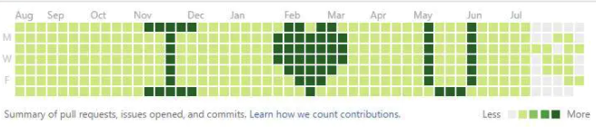
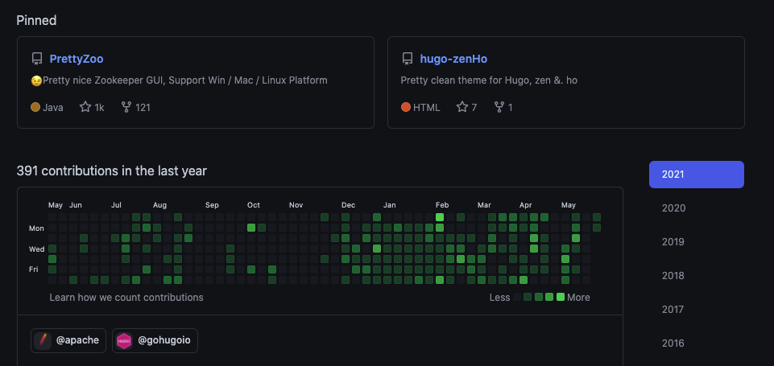
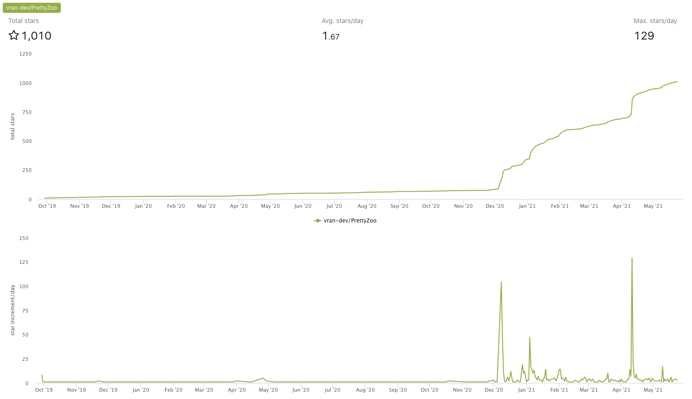
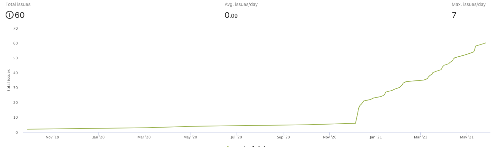
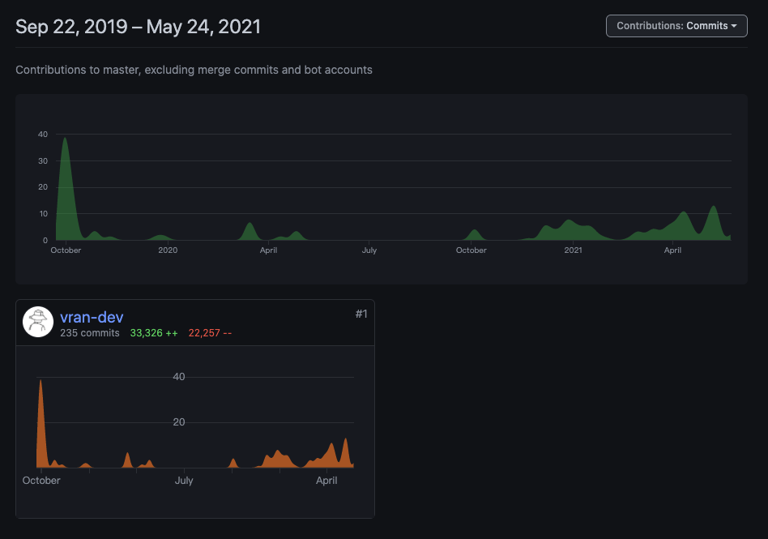

[埃里克·雷蒙] 在其著作《大教堂和市集》里面探讨黑客社区与自由软件原则， 这可以算做是开源文化的启蒙。
时至今日已过去 20 多年了，虽然开源的定义在不断的演化，但是自由和社区仍然是它的基因。
我忘了我接触开源有多久了（两三年？亦或三四年？），但我认真的发起和参与却是最近一年，这段经历让我对开源产生了不同的认知，甚至也改变了我对软件研发的一些认知。
难得矫情一次，就做一个随笔，写写自己在开源路上的一些心路历程。
如果你想了解我的开源项目，可以通过最后附录中的 PrettyZoo 链接跳转
开源与梦想
我只知道刚接触开源的时候，就被这种文化给深深的吸引着，也许人的天性就向往自由吧。
看着那些知名开源项目的主页，幻想着自己也是某个上千 star 项目的 owner，Github 的主页打开就是 lü 油油的一大片。
对，就像下面这样

那时候也还年轻，愿意为此做出尝试和努力，断断续续的参与了一些知名开源项目的边边角角，不过最终还是没有坚持下去。
再后来就逐渐遗忘了这件事情，在时间面前，它终是蒙上了一秒又一秒的尘……
要不是突然的一阵风吹开了这已被尘封的梦想，我大概也不知道我竟然也成了曾经梦想成为的样子：一个上千 star 项目的 owner , github 主页是 lü 油油的一大片

All good things come to those who wait
开源与开源
开源既可以只是开放源代码，也可以不止是开放源代码，而这两个解读也恰好是我做开源经历的两个阶段。
最开始我也是把项目的源码放在 github 上就不管了，这就像把商品放在一个公共陈列柜里一样，不管有人看或不看，用或不用，我自佛系。
后来我逐渐理解到开源其实可以不止是开放源代码，开始尝试以更多的角色去做开源
- 作为项目研发：去解决 bug，开发新的功能，技术可行性调查，系统架构设计等
- 作为项目运营：去写文档，处理社区 issue，去各个平台做推广，关注反馈等
- 作为项目 owner ： 去挖掘用户需求，思考交互设计，绘制功能原型，规划迭代等
- ……
这样一种对开源的认知改变带来的变化非常直观的体现在了项目的各项数据上，比如 star 数， 最开始一年都是不温不火，后面就开始有了明显的增长

社区的 issue 数量也有着类似的增长曲线

这种感觉就像自己开始创业了，但整个公司就我一人，包揽全职。
开源与生活
在有限的时间面前，投入在开源上多一分钟，那么生活就会被压缩一分钟。
但是当我认真的想在这两者画一条分界线的时候却又做不到，因为做开源其实算是自己选择的一种生活方式，两者并不是泾渭分明的。
最疯狂的一段时间我基本下班后就在做开源相关的事情，也包括很多个周末

后来我开始小心翼翼的进行克制，我得把时间再慢慢分配一些在看书、旅游、玩游戏、工作等其他事情上去。
时间越发的有限，那我只能尽可能的想办法去提高单位时间所带来的价值，去尝试
- 实践 MVP（最简化可实行产品），保证我的原型就是我已经满意的样子了再去写代码
- 追求自动化，减少重复的工作
- 重视系统设计，保证系统的演进成本足够低
- 重视工程管理，尽量减少核心功能之外带来的熵
- ……
事实证明这是非常有效的，也让自己养成了一些良好的习惯。
这种感觉就像创业了，但我不能 24 小时都创业吧。
开源与收益
那么开源消耗了我这么多的精力和时间，就没有给我带来什么实质的收益吗？
要说钱的话，一分没有，有段时间我甚至在想要不要贴个二维码接受点赞助啥的（至少可以喝杯咖啡）。
最后也还是放弃了，因为这个产品的初衷就不是拿来赚钱的，何况受众面有限，也赚不了啥钱，那就继续用爱发电呗。
要说名气，也没啥名气，起码面试的时候还没碰见过：原来你是那个 xxx 项目的作者啊。
名和利虽然没有，但是一些虚无缥缈的收获倒有，比如成就感，还记得收到第一个 issue 的时候我都惊了，原来我做的产品真的有人在用，那可是足足让我开心了好几天。
还有一些技能成长，认知提升也可以算是收益。
在这个空气都躁动的快爆炸的时代，至少静下心来做了一件纯粹的事情。
这种感觉就像创业了，但创业不是为了赚钱。
些许失败
即使现在每个版本都有着少许稳定的下载量，但是产品的 contributor 却仍然只有我一个人，这对于一个开源项目来说是很危险的，甚至是有些许失败。
后来我简单的反思了一下，总结了一下原因
- 项目文档不全，导致参与门槛提高
- 技术选型不够热门，社区上熟悉的人少
- 没有组织和形成良好的产品社区，吸引和培养人才
可惜由于我的佛系（拖延症），一直也没有开始去行动。
这种感觉就像创业好久了，但还是就你一个人。
附录
- Github 仓库数据在线统计，https://github.com/vesoft-inc/github-statistics
- MockPlus 产品原型在线设计工具，https://www.mockplus.cn/
- PrettyZoo，https://github.com/vran-dev/PrettyZoo